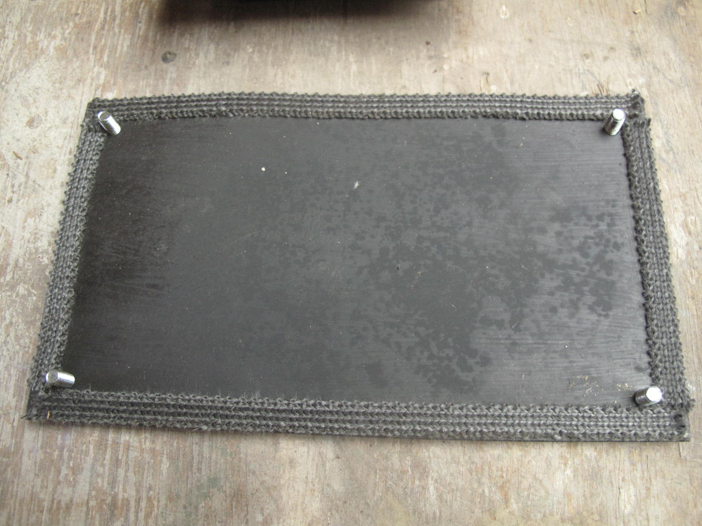

La métallerie
Notre objectif est de développer puis de publier les plans de la métallerie correspondant à une série de modèles standards couvrant les différentes puissances/fonctions permises par les poêles de masse.
 Portes et bâtis |
Trappes de visites |
|---|---|
|
Clapets d'obstruction |
Clapets de démarrage |
Cliquez sur une case pour voir la ficher du poêle correspondant.
Remarques générales
Nous réalisons nous même toute la métallerie pour nos poêles. Nous apprenons aux stagiaires les techniques qui leur permettront de réaliser la métallerie pour leur propre poêle.
Nous travaillons uniquement avec des profilés métalliques standards de l'industrie : cornières, Tés, fers ronds, fers plats, tôle, etc.. Il est donc facile pour n'importe qui de se procurer les matériaux de base pour faire la métallerie de son poêle.

Portes et trappes de visites pour un batchrocket de 8600W.
Licence :
Les plans que vous trouverez sur cette page et sur ce site sont distribués librement, sous une licence open-source CC BY-SA 4.0 : vous êtes libres de partager, d'utiliser, de transformer ce travail, même pour une utilisation commerciale tant que vous citez les auteurs originaux et que vous partagez les résultats de votre travail sous les mêmes conditions.
La construction d'un poêle de masse implique de nombreuses compétences et, bien que nous tentions de fournir les informations les plus claires possibles, nous ne pouvons garantir la réussite de votre construction. Nous ne donc saurions être tenus responsables de tout dommage, matériel ou immatériel causé à vous ou à vos équipements.
1. Portes et bâtis
Règles de conception :
La porte a été conçue pour que l'arrivée d'air ne soit pas réglable. Elle est soit complètement ouverte, soit complètement fermée. C'est important pour que le poêle reste simple à utiliser. D'après notre expérience, les bénéfices que l'on retire d'un réglage de l'arrivée d'air sont négligeables sur un Batchrocket. La plupart du temps le réglage risque de diminuer la qualité de la combustion.
L'arrivée d'air dans la porte est située le plus bas possible. La surface de cette ouverture vaut 25% de la section (surface en coupe transversale) de la cheminée interne. Voir l'article correspondant sur les proportions.
Le bâti n'est pas vissé dans la maçonnerie, mais maintenu par compression. C'est un détail très important car la dilatation des vis ferait éclater les briques par cisaillement (leur point faible).
Matériaux nécessaires :
- Cornière à ailes inégales de 30x50x5 mm
- Té à ailes égal de 40x40x5 mm
- Paumelles à souder "MAROC" en 80 mm sauf pour les portes des foyers des batchrockets de 1500W pour lesquelles nous utilisons des paumelles de 60 mm
- Tresses céramiques plates autocollantes de 10x2 mm pour l'étanchéité portes/vitres et portes/bâti
- Laine céramique SUPERWOOL 607HT pour l'étanchéité entre le bâti et le poêle
- Vis de poêlier avec écrou pour les poignées en bois
- Tôle pliée de 1 ou 1,5 mm d'épaisseur qui sera vissée contre le bâti (avec des vis autoforeuses) pour le maintenir en position
Points délicats :
- Soyez précis, travaillez sur un marbre, bloquez vos pièces avant de souder : planéité et angles droits sont de rigueur !
- Il faut 5 mm de jeu coté intérieur entre une porte et son bâti pour qu'il n'y ait pas de blocage lié à la dilatation des portes.
- Le bâti ne doit pas être vissé dans les briques qui éclateraient à cause de la dilatation du métal.
- Les vitres sont maintenues en position par deux morceaux de fers plats soudés.
Images :
Dans le sens de la lecture : étapes de fabrication d'un ensemble porte/bâti pour le foyer.
2. Trappes de visites
Règles de conception :
La partie du bâti de la trappe qui s'insert dans la maçonnerie reprend les dimensions d'une brique ou d'une demi-brique pour qu'il puisse s'insérer dans le mur à la place d'un brique.
La trappe doit être la plus étanche possible.
Les trappes doivent être placées de sorte qu'on puisse accéder à toutes les parties à l'intérieur du poêle.
Matériaux nécessaires :
- Cornière à ailes inégales de 30x50x5 mm
- Tôle de 3 mm d'épaisseur
- Fil de fer
- Tresses céramiques plates autocollantes de 10x2 mm pour l'étanchéité portes/vitres et portes/bâti
- Laine céramique SUPERWOOL 607HT pour l'étanchéité entre le bâti et le poêle
- Vis de poêlier
- Tôle pliée de 1 ou 1,5 mm d'épaisseur qui sera vissée contre le bâti (avec des vis autoforeuses) pour le maintenir en position
Points délicats :
- Soyez précis, travaillez sur un marbre, bloquez vos pièces avant de souder : planéité et angles droits sont de rigueur !
- Le bâti est taraudé pour pouvoir y visser la tôle.
- Le bâti est percé dans les quatres coins et les trous permettent de l'accrocher à des fils de fer torsadés qui sont intercalés dans le mortier.
Images :
- 
Dans le sens de la lecture : étapes de fabrication et de pose d'une trappe de visite.
3. Clapets d'obstruction
Règles de conception :
-
Le clapet d'obstruction est ESSENTIEL. Beaucoup de poêles de masse (Rocket surtout, mais d'autres aussi) n'en sont pas équipés et c'est regrettable. Il permet de fermer la cheminée d'évacuation après que le feu soit éteint.
C'est important car à la fin de la flambée, toute la maçonnerie a accumulé de la chaleur et un tirage résiduel important se maintient même après l'arrêt du feu. Ce tirage subsiste même si l'arrivée d'air principale est fermée. Il envoie tranquillement mais sûrement la chaleur à l'extérieur.
-
Les normes aux US stipulent que le clapet d'obstruction doit être étanche à 5%. Ceci permet d'éviter que, si le clapet d'obstruction est fermé trop tôt alors que le feu brûle encore, les gaz imbrûlés refoulent dans la maison et intoxiquent ses occupants.
En pratique, les clapets rotatif comme nous les fabriquons sont difficilement étanches à 5%. En effet, il faut laisser un jeu de 2 mm pour anticiper la dilatation et il faut bien s'appliquer pour que le clapet soit positionné le mieux possible.
Matériaux nécessaires :
- Tôle de 3 mm d'épaisseur
- Fer rond de 16 mm d'épaisseur
Points délicats :
- Soyez précis, travaillez sur un marbre, bloquez vos pièces avant de souder : planéité et angles droits sont de rigueur !
- Une fois mis en position à blanc, le clapet est retravaillé avec une meuleuse d'angle et un disque à ébarder pour ajuster les bords.
- Une petite goupille qui maintient le clapet en position verticale peut être nécessaire.
Images :
Photos de différents clapets d'obstruction.
4. Clapets de démarrage
Règles de conception :
-
Le clapet de démarrage (aussi appelé "starter" ou "by-pass") est un autre élément ESSENTIEL. Il permet de créer un raccourci sur le chemin des gaz. Les gaz sont donc en contact avec moins de surface de briques et sortent plus chauds. On réchauffe ainsi pendant 5-10 minutes la cheminée pour créer un bon tirage puis on ferme le clapet.
-
Pour que le clapet de démarrage soit efficace. L'ouverture dans la maçonnerie doit être supérieure ou égale à 25% de la section de la cheminée interne.
-
Le clapet de démarrage permet aussi de faire fonctionner facilement le poêle en intersaison voir même en été, lorsque la maison est plus froide que l'air extérieur.
Matériaux nécessaires :
- Tôle de 3 mm d'épaisseur
- Fer rond de 16 mm d'épaisseur
Points délicats :
- Soyez précis, travaillez sur un marbre, bloquez vos pièces avant de souder : planéité et angles droits sont de rigueur !
- Le clapet de démarrage doit impérativement être en dessous du niveau haut de la cheminée interne. S'il était plus haut, la chaleur risquerait de le déformer trop fortement.
- La poignée du clapet de démarrage doit souvent être soudée en place.
Images :
Clapet de démarrage en position.

Mise en place du clapet de démarrage.Source : Pascal Burnet, Stage UZUME, 2017.